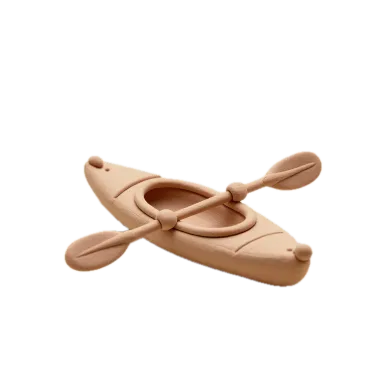
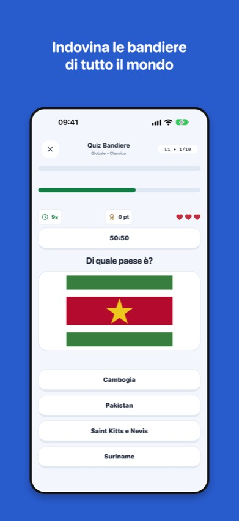
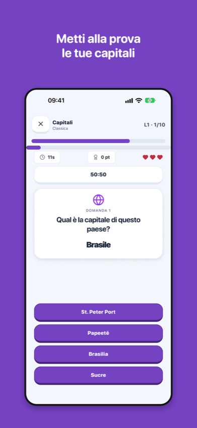

Bandeiras
Um país, quatro respostas. Reconheces o país pela sua bandeira?
A TUA PRÓXIMA VIAGEM É UM QUIZ
Adivinha bandeiras e capitais, explora o mapa e coleciona 250 souvenirs. Viaja com o Giro: a tua próxima lembrança está a uma resposta de distância.
Para iPhone · Em seis idiomas


Um pequeno quiz. Uma grande viagem.
01 / Como jogar
Uma bandeira para reconhecer, uma capital para recordar, uma entrega para completar. Escolhe a tua próxima paragem.
Um país, quatro respostas. Reconheces o país pela sua bandeira?
De Roma a Tóquio: encontra a capital certa e alarga os teus horizontes.
Que país é maior? Qual tem mais habitantes? Compara-os.
Observa um objeto, segue as pistas e adivinha de onde vem.
Treina a memória e encontra os pares, uma descoberta de cada vez.
Atravessa fronteiras no mapa e leva o souvenir ao seu destino.
02 / 250 SOUVENIRS
250 souvenirs para colecionar: monumentos, animais e objetos que contam a história de um lugar. Qual será a tua próxima descoberta?



Enfrenta o desafio diário, prolonga a tua série e regressa pelas recompensas do dia. Abre malas e descobre os souvenirs que te esperam.
03 / GIROVAGO
Perguntas, desafios e descobertas, sempre à mão.




Capturas da app em italiano. O jogo está disponível em seis idiomas.
Para comunicar um problema, indica o modelo do iPhone, a versão do iOS e o que estavas a fazer. Os relatos no GitHub são públicos; usa o email para pedidos com dados pessoais.